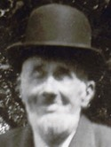

GMBH Tree - Family Card
GMBH Tree - Family Card
William Macgaw(abt 1808 - )John Alexander Macdonald(23 Mar 1818 - 22 Feb 1899)
Margaret McCracken(abt 1817 - abt 1858)Jane Grant(1820 - 12 Jul 1878)
m. 5 Sep 1876, East Williams, Middlesex Co, Ontario, Canada


b. 7 Mar 1849, Kirkmaiden, Wigtonshire, Scotland
d. 31 Mar 1935, Puyallup, Washington, USA
br. Sumner, Pierce Co, Washington, USA
occ. Carpenter, 1900
edu.
rel. Presbyterian
bp.
cen. 1851, Blenheim, Oxford Co, Ontario, Canada

b. 24 May 1856, East Williams, Middlesex Co, Ontario, Canada
d. 19 Dec 1906, Alameda, California, USA
br.
occ.
edu.
rel. Presbyterian
bp.
cen.
Children
> Martha Jane Macgaw(19 Dec 1877 - 29 Aug 1928)
Margaret Rosabelle Macgaw(11 Feb 1880 - 1 Feb 1881)
Mary Gertrude Macgaw(12 May 1882 - 3 Mar 1913)
John Macgaw(abt 1884 - 13 Oct 1890)